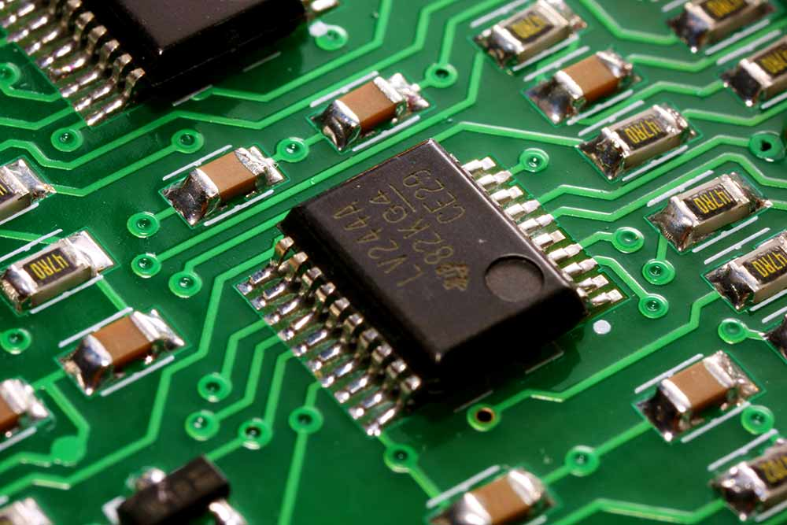
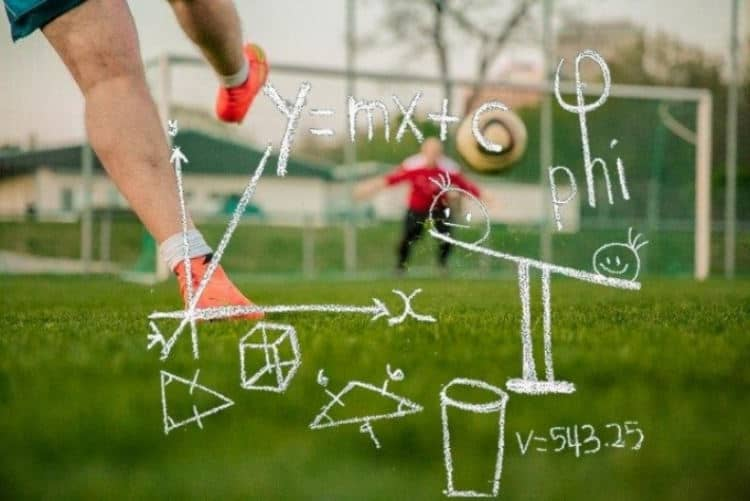
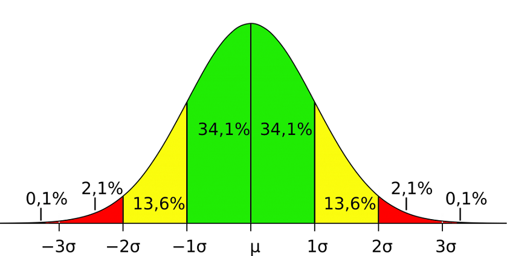

Aportes al Proyecto Integrado
En este area se presentara los aportes de cada materia en el proyecto integrado.
Diseño de Circuitos
En el area de Diseño de Circuitos se presentan los aportes de:
Diseño e implementacion de circuitos combinacionales en protoboard.
Descripcion de decodificadores.
Manejo de display de 7 segmentos.

Emprendimiento e Innovacion Tecnologica
En el area de Emprendimiento e Innovacion Tecnologica se presentan los aportes de:
Ideas innovadoras - Proyecto de Integracion de saberes.
Analisis Matematico
En el area de Analisis Matematico se presentan los aportes de:
Caracterizacion de problemas aplicados como base para ciencias de la computacion.
Proyecto multidiscisciplinario: Aplicacion informatica para gestion de torneos.
Aporte de la asignatura en la parte de analisis predictivo con el metodo probabilistico de Monte Carlo.

Teoria de la Distribucion y Probabilidad
En el area de Teoria de la Distribucion y Probabilidad se presentan los aportes de:
Realizar estimaciones sobre los posibles resultados en un Sitema de gestion de Torneos con panel de resultados predictivos.

Progamación Orientada a Objetos
En el area de Programación Orientada a Objetos se presentan los aportes de:
El aporte principal de esta unidad es brindar una compensión clara de los conceptos fundamentales de la programación orientada
a objetos, que son la base para la implementacion de software.Los estudiantes aprenderan a definir las clases, objetos, atributos,
metodos, y a entender como se relacionan estos conceptos entre si.
En el proyecto integrador, este conocimiento es fundamental para la creación de una estructura clara y coherente en la aplicación.
El uso de clases y objetos permite una organización y reutilización del código, facilitando el mantenimiento y la escalabilidad de la
aplicación.Ademas, el conocimiento adquirido sobre la programacion orientada a objetos permitira la implementacion de modelos de datos
complejos para el analisis estadsitico de competencias deportivas.